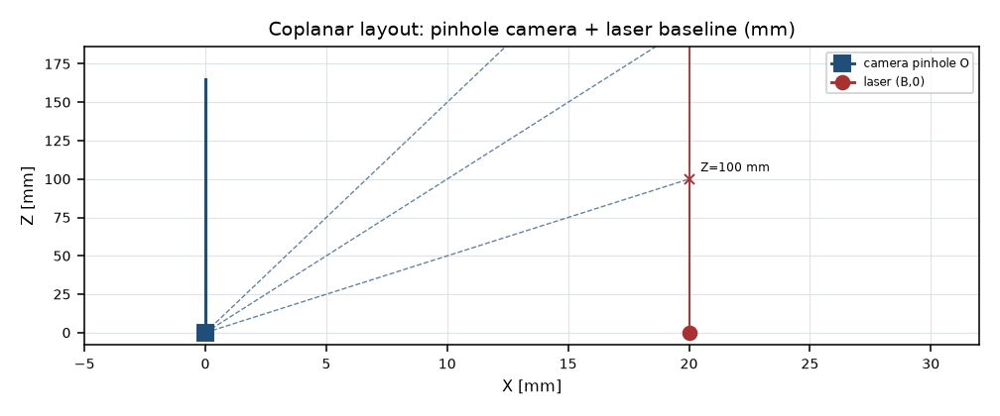
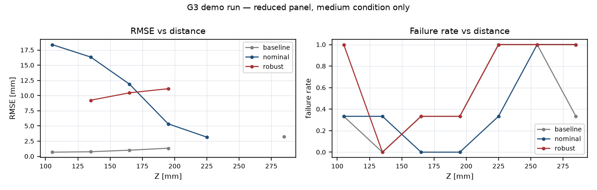
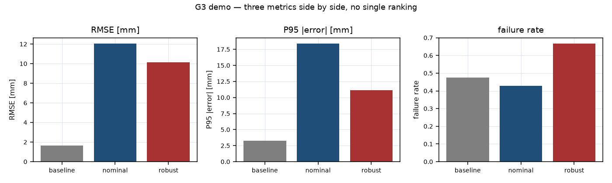
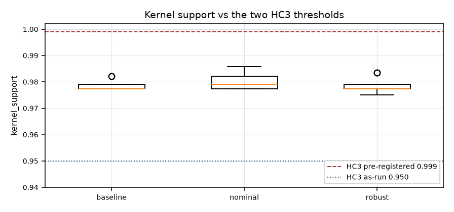

OptiSys-Lab G3 工程报告
20261021_084255_G3_ea57a83b · G3 · schema 3.0
1. 标识与证据等级
- Run ID
- 20261021_084255_G3_ea57a83b
- Gate
- G3
- Schema
- 3.0
- Case
- NOT_AVAILABLE
- Model level
- UNKNOWN
- Run status
- PASS
- Scientific status
- DEMO_ONLY_NOT_A_G2_CONFIRMATION
- Evidence level
- SIMULATED
- Frozen
- yes
- Finished (UTC)
- 2026-10-21T08:43:20+00:00
- Config SHA-256
- UNKNOWN
- Source tree SHA-256
- UNKNOWN
- Git commit
- NO_COMMIT
2. 光路模型与假设边界
坐标约定：物点 O=(0,0,0)，+Z 为光轴，+X 横向；激光位于 (B,0,0)，方向 (−sinθ, 0, cosθ)。内部单位 mm / rad / pixel / s，角度仅在配置层用 deg。
| 层级 | 含义 | 本项目的状态 |
|---|---|---|
| L0 | 虚拟像平面针孔模型，不翻转像 | 已实现，解析可验证 |
| L1-approximate | 真实倒像单透镜（等凸 N-BK7），几何足迹 ⊛ 标量 Airy 极限 | 本 run 使用（model_level = UNKNOWN） |
| 实测标定 | 对真实相机与镜头做标定 | **未做**，全项目无实测数据 |
简化 Airy / 几何核限制：点扩散函数由几何足迹与标量 Airy 圆盘卷积近似，不使用真实波前或衍射传播。PSF 窗半宽上限 max_half_px = 40，窗由 ceil(max|du|,|dv|) + 6·airy_radius + 1 决定。该近似直接导致 kernel_support 的结构上限约 0.972–0.991，也就是 HC3 冲突的物理根源。
Optiland 贡献：optiland 0.6.3 提供真实光线追迹（折射面求交与折射定律），是本项目中唯一非自研的核心光学计算；误差统计、标定、优化、核生成均为自研。
3. 数据集与口径
| 项 | 值 |
|---|---|
| comparable_to_g2 | False |
| condition | medium |
| demo | True |
| n_assemblies | 1 |
| n_estimators | 3 |
| n_frames_per_candidate | 7 |
| n_test_distances | 7 |
| sampled_rows | 63 |
| test_distances | [105.0, 135.0, 165.0, 195.0, 225.0, 255.0, 285.0] |
4. 精度、P95、偏差与失败率
| 候选 | 尝试帧 | 有效帧 | 失败率 | RMSE (mm) | P95|e| (mm) | bias (mm) |
|---|---|---|---|---|---|---|
| baseline | 21 | 11 | 47.62% | 1.6383 | 3.2586 | 1.3490 |
| nominal | 21 | 12 | 42.86% | 12.0437 | 18.3894 | 9.5725 |
| robust | 21 | 7 | 66.67% | 10.1564 | 11.1609 | -10.1238 |
| 候选 | 估计器 | 有效帧 | 失败率 | RMSE (mm) | P95|e| (mm) |
|---|---|---|---|---|---|
| baseline | centroid | 5 | 28.57% | 1.7587 | 2.9788 |
| baseline | gaussian_2d | 1 | 85.71% | 0.7382 | 0.7382 |
| baseline | gaussian_2d_integrated | 5 | 28.57% | 1.6440 | 2.7691 |
| nominal | centroid | 5 | 28.57% | 12.5416 | 18.0123 |
| nominal | gaussian_2d | 2 | 71.43% | 9.2253 | 11.5613 |
| nominal | gaussian_2d_integrated | 5 | 28.57% | 12.5214 | 17.9526 |
| robust | centroid | 3 | 57.14% | 10.2399 | 10.9820 |
| robust | gaussian_2d | 1 | 85.71% | 9.2234 | 9.2234 |
| robust | gaussian_2d_integrated | 3 | 57.14% | 10.3670 | 11.1398 |
三估计器：centroid（加权质心）、gaussian_2d（点采样二维高斯拟合，σ 下界 1.0 px 导致 MODEL_MISMATCH，有效率因此显著偏低）、gaussian_2d_integrated（面积积分高斯拟合）。其中 gaussian_2d 的低有效率是模型不匹配，不是传感器失效，不能读作系统失败率。
配对口径 vs 全尝试口径
上表为全尝试帧口径（分母 = n_attempted）。配对比较只在两候选都有效的共同帧上计算 RMSE，两者分母不同，数值不可混用。配对 ΔRMSE 见第 5 节。
robust 的权衡（G2-07）
robust 的 RMSE 低于 baseline，但失败率高于 baseline。本报告不做单一排名，也不输出「最优设计」。三指标必须同屏阅读。
7. 工程图件
所有图均由已知 CSV/JSON 重建；图件只是可视化，不作为唯一数值证据。每个图旁附 SHA-256 以便核对。
原 PDF 期望的第五张「976 nm 对比图」属于 G4，本轮不存在，故不出图、不编造。G3 只展示前四类。

SHA-256 6e905c4ef00a71bee8d826c2d1a04fb9a0c6cce4fa1f04f1b954ed9eb8c44ff0

SHA-256 d0c9e8a0da116ed7a50daf77c155224580f3b9b43d57d4debc9111cf5fb1283d

SHA-256 89acca17664b90c62b4562cf6047e289e38bf8e20f21960ec64b8a9127a066eb

SHA-256 f6df05b127f510c0e384e4a6574db25e482de1178e95dcb101f6b1f674c62a91
8. G2 继承纠偏记录（不是「所有检查全绿」）
| ID | 判定 | 状态令牌 | 被违反的预注册条款 |
|---|---|---|---|
| PRE-G3-01 | DEVIATION | G2_PREREG_FEASIBILITY_NOT_ESTABLISHED | docs/g2/G2_PRE_REGISTRATION.md:33 HC3 kernel support >= 0.999 |
| PRE-G3-02 | DEVIATION | G2_FINAL_DISTANCE_LEAK_INTO_DEVELOPMENT | docs/g2/G2_PRE_REGISTRATION.md:69 final-test distances never appear in any search, OAT, precheck or model selection |
| PRE-G3-02b | DEVIATION | G2_SEARCH_USES_VALIDATION_DISTANCES | docs/g2/G2_PRE_REGISTRATION.md:66 validation distances are 'model-family selection only' |
| PRE-G3-02c | DEVIATION | G2_FINAL_PANEL_DEVIATION | 7 distances x {strong, medium, weak} = 21 frames per assembly |
| PRE-G3-06.5 | PROCEDURE_NOT_EXECUTED | CALIBRATION_MODEL_SELECTION_NOT_EXECUTED_AS_REGISTERED | docs/g2/G2_PRE_REGISTRATION.md:113-116 select M2 if validation RMSE is >= 20% lower than M1, and write calibration_model_choice.json before the final test |
其余发现
| ID | 状态令牌 | 内容 |
|---|---|---|
| PRE-G3-05 | G2_STRATEGY_AB_NOT_DIRECTLY_COMPARABLE | Strategy A is 2000 assemblies x 3 estimators, Strategy B is 200 x 1 estimator over a subset of the same final draw. Only the per-estimator comparison is admissible, and even that is unpaired. The paired A/B bootstrap on the 200 shared assemblies is NOT_RUN and the reason is budget, not impossibility. |
| PRE-G3-05b | CALIBRATION_FRAME_COUNT_CORRECTED_5_TO_9 | the report claimed 5 calibration frames per unit; g2.py:1046 takes 9 in the non-quick path. The report text was wrong, the code was right, and the cost of strategy B was understated by 80%. |
| PRE-G3-06.1 | G2_AUDIT_FORMULA_ERRATUM_REQUIRED | the L1 image-height formula printed in 03_SCIENTIFIC_AUDIT.md section 4 carries an extra 1/Z. At Z=200 mm it yields 648.43 px against a traced 879.95 px, an error of -231.51 px that is 96.5% of the very offset the formula is meant to explain. The error class is an algebraic power of Z, not a sign. |
| PRE-G3-06.2 | CLI_REPORT_SCHEMA_3_0_BRANCH_ADDED | cmd_report previously dispatched schema 2.0 and fell through to schema 1.0 for everything else, so a G2 run failed with ConfigError. A three-way resolver _resolve_report_config now dispatches 1.0/2.0/3.0 from the config snapshot, and cmd_report calls render_g2_report for kind == G2. |
| PRE-G3-06.4 | G2_AUDIT_PACKAGE_INCOMPLETE | the G2 audit ZIP does not contain pyproject.toml, the CI workflow, or the README, so a recipient cannot reconstruct the environment from the package alone. |
| G2-07 | ROBUST_TRADEOFF_OPEN | robust buys a 1.19 mm lower RMSE for a 3.14 pp higher failure rate. Any ranking that collapses this to a single score is rejected; the UI shows all three metrics side by side and does not auto-select a winner. |
完整证据见 docs/g3/G2_INHERITANCE_SCIENTIFIC_AUDIT.md 与 docs/g3/evidence/。
9. 局限、未执行项与缺失
继承的开放问题
| ID | 严重度 | 问题 | 状态 |
|---|---|---|---|
| G2-01 | P0 | HC3 as registered (>= 0.999) is structurally unreachable for this optical model | AMENDED_NOT_RESOLVED |
| G2-02 | P0 | final-test distances 105/285 mm entered OAT and precheck | OPEN_CARRIED |
| G2-03 | P0 | design search runs entirely on declared validation distances | OPEN_CARRIED |
| G2-04 | P1 | main panel is medium-condition only | DISCLOSED_CARRIED |
| G2-05 | P1 | calibration model selection was not executed as registered | DISCLOSED_CARRIED |
| G2-06 | P1 | strategy A vs B has no paired comparison | DISCLOSED_CARRIED |
| G2-07 | P2 | robust trades a higher failure rate for a lower RMSE | DISCLOSED_CARRIED |
| G2-08 | P2 | G2 audit ZIP is internally incomplete | SUPERSEDED_NOT_REPACKAGED |
本 run 的缺失项
| 缺失项 |
|---|
| 无缺失项记录 |
明确未做的事
- 无任何实测数据：证据层级上限为
SIMULATED/CROSS_CHECKED，从未达到MEASURED或VALIDATED。 - 976 nm 多模泵浦 G4 已在独立模拟案例中实现；本 G2 run 不包含 G4 结果。
- 消色差双胶合、Scheimpflug 倾斜、真实波前 PSF：未做。
- Strategy A/B 配对 bootstrap：
NOT_RUN（预算）。 - 为求漂亮数值重跑 G2：禁止，本轮未做。
10. 复现命令与来源文件哈希
.venv\Scripts\python.exe -m optisys validate --config configs/triangulation_g2_l1.yaml .venv\Scripts\python.exe -m optisys report --run <run_dir> .venv\Scripts\python.exe -m pytest -q
报告生成为派生操作，写入 runs/_derived/<run_id>/，从不覆盖冻结 run。
| 来源文件 | SHA-256 |
|---|---|
| config_snapshot.yaml | ea57a83bd16b2953a995c2b1b948c8f50a203e452dcf88070315b33dafeafd3b |
| independent_validation/sampled_results.csv | 4a55cadec3e04097324cd0620fb0e81c42b56fe386f21b28c9cfd811a4947bc9 |
| metrics.json | e3afc4bcace1d838c98a2b2f31761e7fe02a3b41dafeb34326cf6c375f7c0160 |
| provenance.json | 9f4b37d816a411cc9bf9ac9ea31f54eb81ee633db0ecc44af5ccde108196a949 |
| run_status.json | 8691c3b0da95ba6c8b8c208335c9d1463863ffe3a36b0334e6277d3ae0d084f9 |
| tests_junit.xml | ABSENT |